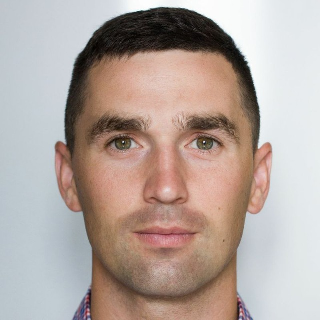

1. - Фото
2. - ФИО
Сухобский Александр Владимирович
3. - О себе
До недавнего времени вся моя жизнь была связана с футболом. В свое время был игроком дестких и юношеских команд, призер республиканских соревнований, кандидат в юношескую сборную РБ. Профессиональную карберу игрока закончил в 21 год, после чего начал работу детским тренером по футболу. Последнее место работы - свой частный детский футбольный клуб. В данный момент решил сменить род деятельности.
4. - Образование
- 2004-2008: Лицей №1 (класс с иглубленным изучением физики и математики)
- 2008-2013: БГУФК (тренерская работа по виду спорта (футбол)
- 2013-2014: БГПУ им. Максима Танка (магистратура)
5. - Работа
Председатель правления СОО "Футбольный клуб "Ирбис"